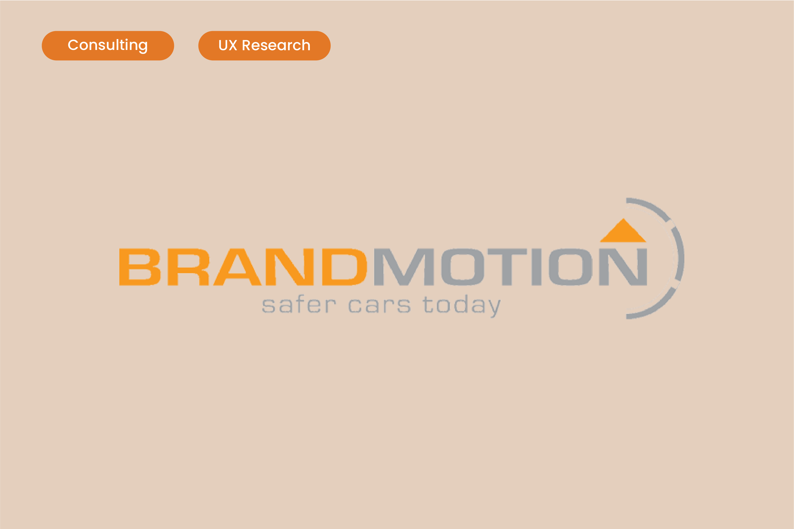
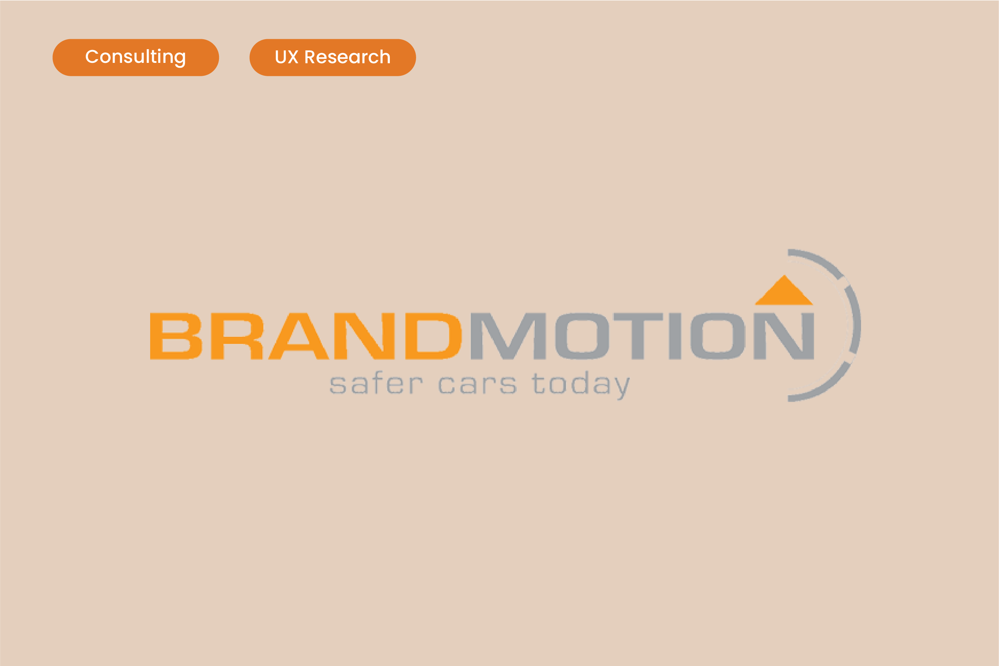

Hello I’m Yiting, the UX designer. Welcome to my website. I Inspire and empower people through innovative design. I am currently studying Human-Computer Interaction at the University of Michigan. Besides design, I am passionate about music, travelling, and plants!

As an UX designers, I am responsible for making sure that the user’s interaction with a digital product is as fast, easy and efficient as possible. While I care about the visuals, I map out the user journey and strategies to solve users’ pain points and meet their needs. The outcome of that is a wireframe – a blueprint of the product.
On this website, you can explore some of my design work and learn more about me. During the COVID quarantine, I started collecting plants as a hobby. As for now, I have collected over 40 different species. My Favorite music genre is K-pop. My favorite K-pop groups are BLACKPINK, (G)I-DLE, and IVE. Feel free to connect with me through email, Instagram, and LinkedIn.
 
